De Word a página web
Si quieres saber de lo que hablando dale aquí para ir a la pagina donde esta el proyecto
Funcionamiento General
La herramienta cuenta con una interfaz intuitiva configurada para diferentes usos. A continuación, se describen las vistas principales:
Interfaz de Manuales Técnicos: Orientada a la creación de documentación técnica.
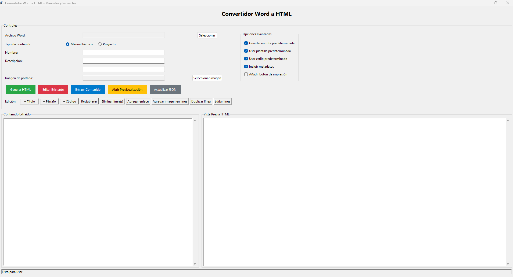
Interfaz de Proyectos: Diseñada específicamente para gestionar y generar proyectos como este.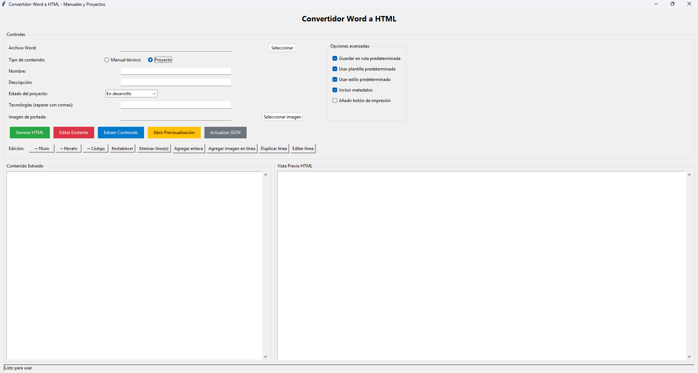
Para ilustrar cómo funciona, usaremos esta misma herramienta para recrear este manual paso a paso. Esto demuestra su capacidad de autogeneración.
Pasos para Generar una Página Web
Sigue estos pasos detallados para convertir un documento Word en una página web HTML:
Seleccionar el Archivo Word:
Abre la herramienta y navega hasta la sección de carga de archivos.
Selecciona el documento Word que deseas convertir. Asegúrate de que el archivo esté en formato .docx y contenga el contenido principal (texto, títulos, listas, etc.).
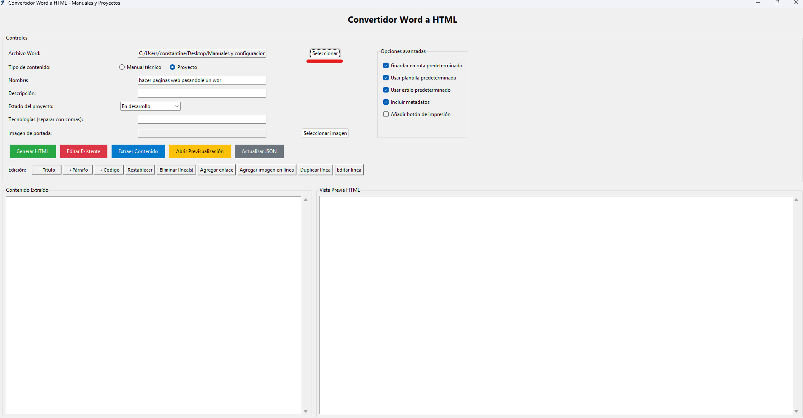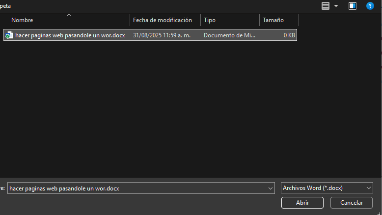
Extraer el Contenido:
Una vez seleccionado el archivo, haz clic en el botón "Extraer Contenido".
La herramienta analizará el documento y extraerá elementos como texto, secciones y estructuras. El resultado se mostrará en una vista editable, similar a un editor de texto enriquecido.
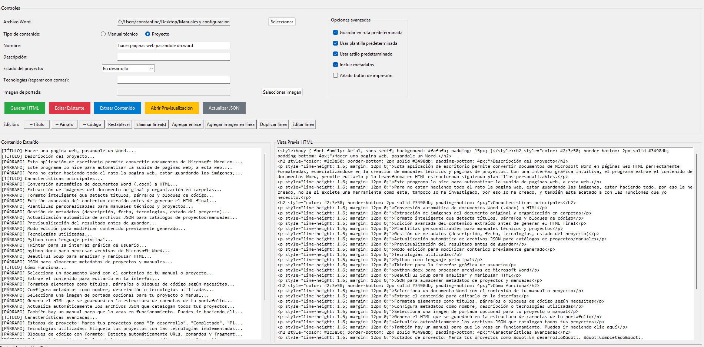
Editar y Personalizar el Contenido:
Utiliza el menú superior para realizar modificaciones. Algunas opciones comunes incluyen:
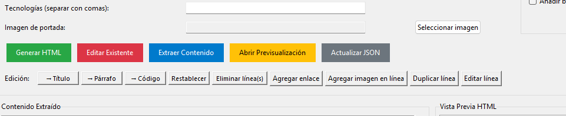
Algunas opciones comunes incluyen:
Agregar Descripción: Inserta una descripción detallada del proyecto o sección. Por ejemplo, agrega un párrafo introductorio.
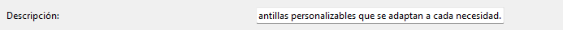
Definir Estado: Indica el estado actual del proyecto (e.g., "En Desarrollo", "Completado").
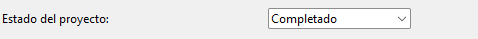
Listar Tecnologías Utilizadas: Agrega una lista de herramientas o tecnologías involucradas (e.g., "HTML, CSS, IA deGrok").

Agregar Portada: Incluye una imagen de portada. (Nota: En este proyecto, la portada fue generada automáticamente por la IA deGrokintegrada en la herramienta).
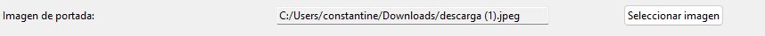
Agregar enlaces:
Haz clic en "Agregar Enlace".
Seabrirá una ventana emergente donde debes ingresar:
El texto del enlace (e.g., "Visitar Proyecto").
La URL de destino (e.g., "").
Confirmahaciendo clic en "Agregar Enlace". El enlace se insertará en el contenido editable.
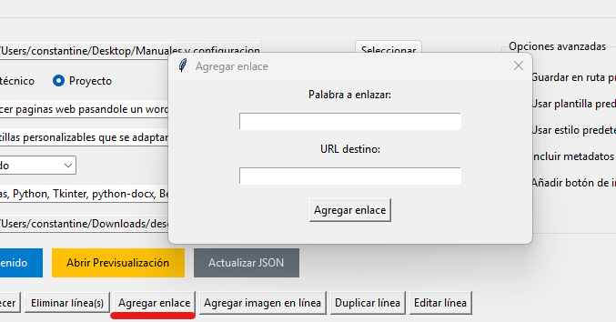
Generar el HTML Final:
Una vez que hayas completado todas las ediciones y agregados, haz clic en "Generar HTML".
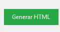
La herramienta procesará el contenido y generará un archivo HTML completo, listo para publicarse en un sitio web. Esto incluye la estructura básica (encabezados, párrafos, listas, imágenes y enlaces). Por eso, es necesario añadir una plantilla.